The flow at a glance
Do the setup in this order. Teams and the auction both hang off a tournament, so the tournament must exist first.
Sign in
Page: /login
- Open the admin URL. You land on the sign-in screen.
- Enter your Email and Password.
- Click Sign in. You are taken to the Dashboard.
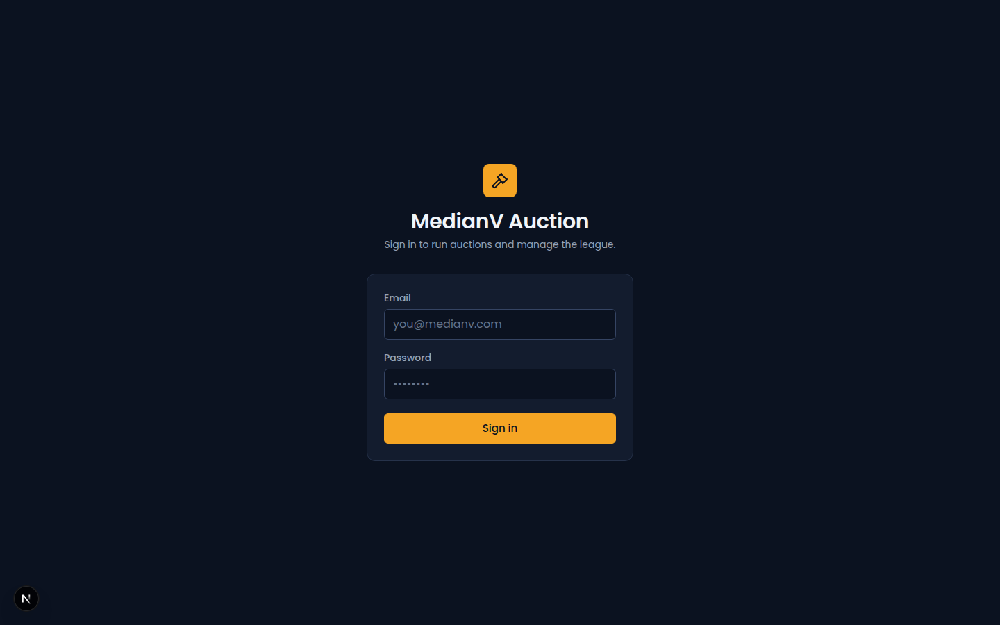
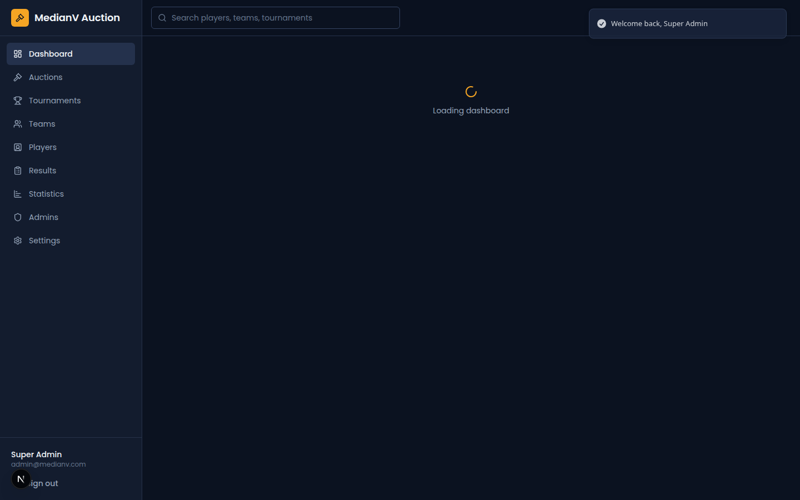
Create the tournament
Page: Tournaments in the left nav
A tournament is one season. Teams and the auction are both attached to it, so create it first.
- Click Tournaments in the left nav.
- Click + New tournament (top right).
- Fill in the form — only the name is required, but series and season details help group seasons across years.
- Click Create tournament. The new season appears as a card in the list.
| Field | What to enter |
|---|---|
| Tournament name * | Full name, e.g. MedianV Premier League Season 5 |
| Short name | Used where space is tight, e.g. MPL S5 |
| Series name / Season name / Season number | Groups seasons of the same league — MedianV Premier League / Season 5 / 5 |
| Location | Venue city, e.g. Ahmedabad, Gujarat |
| Start date / End date | End date cannot be before the start date |
| Status | Upcoming / Ongoing / Completed — default Upcoming |
| Description | Optional notes: format, participating teams |
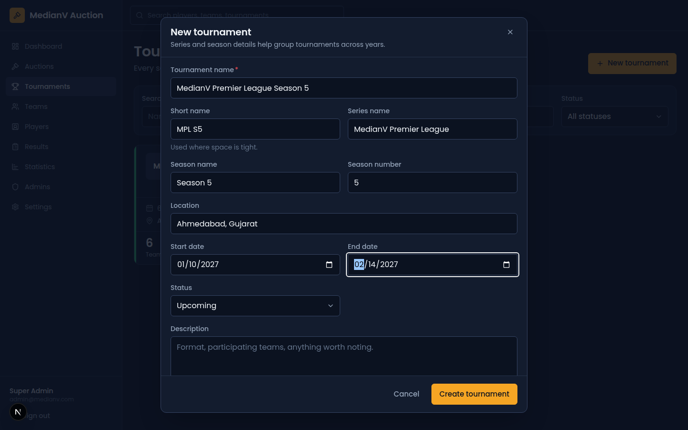
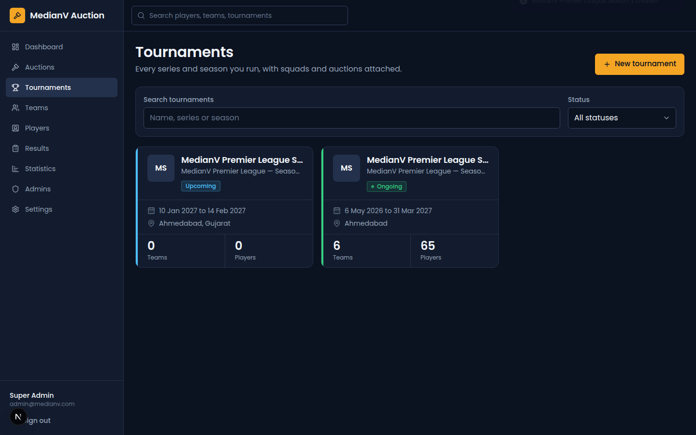
Create the teams
Page: Teams in the left nav
One team per franchise. Set the purse and squad limits here — the auction console enforces them during bidding. Repeat for every franchise in the season.
- Click Teams in the left nav.
- Click + New team.
- Enter the team details (table below). Pick the Tournament you created in step 2.
- Click Create team. The team card shows its purse and player count.
- Repeat for each franchise.
| Field | What to enter |
|---|---|
| Team name * | Franchise name, e.g. Sample Strikers |
| Short name | Up to 8 characters; shown on scorecards and the auction board, e.g. SSK |
| Owner | Who runs the franchise |
| Team colour | Hex colour for the crest and purse bar, e.g. #f5a524 |
| Purse (lakhs) * | Total budget in lakhs. 200 = 2 Cr (Season 4 purse); 1000 = 10 Cr — default 1000 |
| Max players | Squad ceiling — default 18 |
| Min players | Squad floor; must not exceed Max — default 11 |
| Tournament * | The season this team plays in — must match the auction's tournament |
| Status | Active / Inactive. Inactive teams cannot bid — default Active |
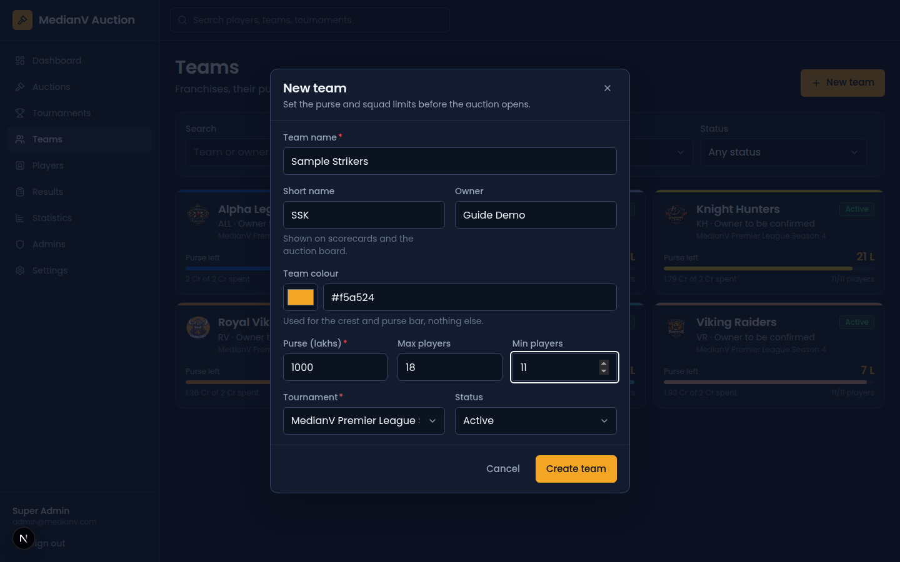
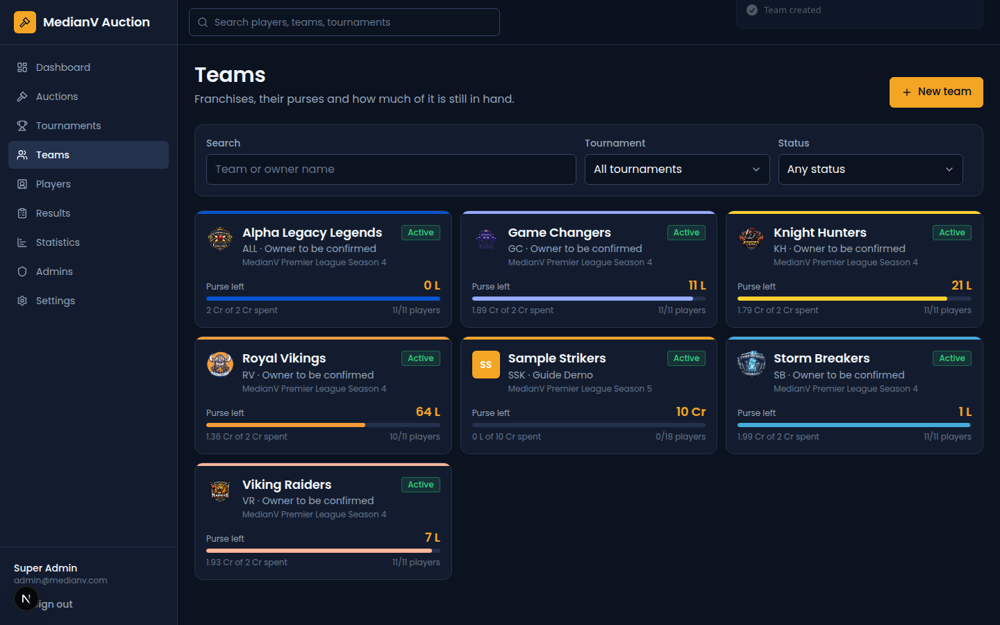
Register players
Page: Players in the left nav
Players are a shared pool — they are not tied to a tournament. A player only needs to be registered once, then can be entered into any auction.
- Click Players in the left nav.
- Click + Add player.
- Enter the player's details. Role and base price are what matter in the auction.
- Leave Active — available to be entered into auctions ticked.
- Click Add player. Repeat for every registered player.
| Field | What to enter |
|---|---|
| Full name * | e.g. Arjun Mehta |
| Role * | Batter / Bowler / All-rounder / Wicket-keeper |
| Category | Local / International — default Local |
| Base price (lakhs) * | Opening bid when the player comes up — default 20 |
| Batting style / Bowling style | e.g. Right-hand bat / Right-arm medium |
| Date of birth | Optional |
| Profile image URL | Full https:// link to a photo, or blank |
| External profile URL | Cricinfo, Cricbuzz or CricHeroes link, or blank |
| Active | Ticked = can be added to an auction pool. Untick to bench a player |
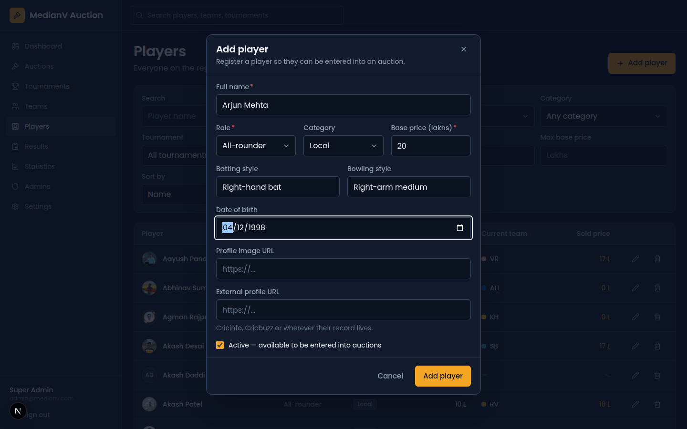
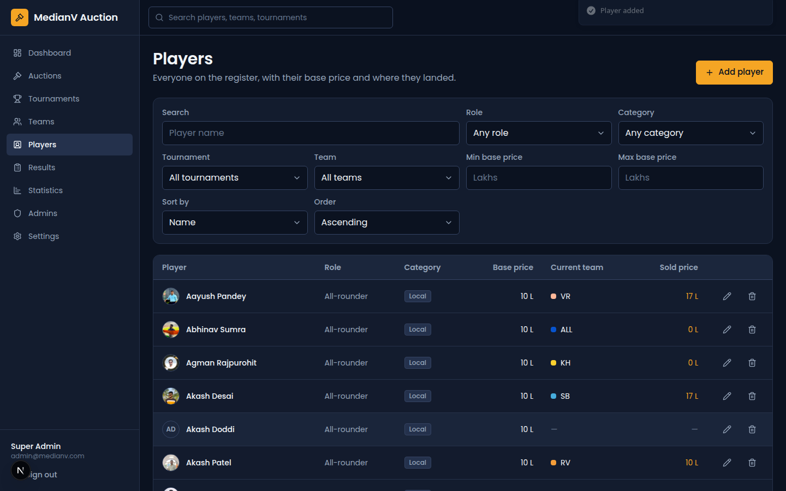
Create the auction
Page: Auctions in the left nav
The auction holds the bidding rules. Increments and squad limits are enforced by the server — the console never trusts the browser with the arithmetic.
- Click Auctions in the left nav.
- Click + New auction.
- Name it and choose the Tournament from step 2 — the same one the teams are attached to.
- Set the squad sizes, timer and bid increments (table below).
- Click Create auction. It appears as a Draft card.
| Field | What to enter |
|---|---|
| Auction name * | e.g. MPL Season 5 Auction |
| Tournament * | The season being auctioned — decides which teams can bid |
| Maximum squad size | A team cannot buy beyond this — default 11 |
| Minimum squad size | Squad floor for the season — default 0 |
| Bid timer (seconds) | Countdown per player. 0 = no countdown — default 30 |
| Bid increments: Increment | How much each bid rises by at first — default 1 L |
| Bid increments: Above | Threshold where the bigger step kicks in — default 40 L |
| Bid increments: Rises by | Step size above the threshold — default 2 L |
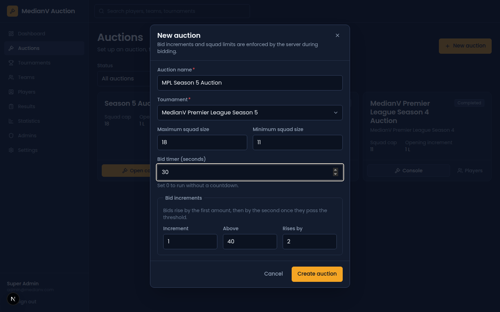
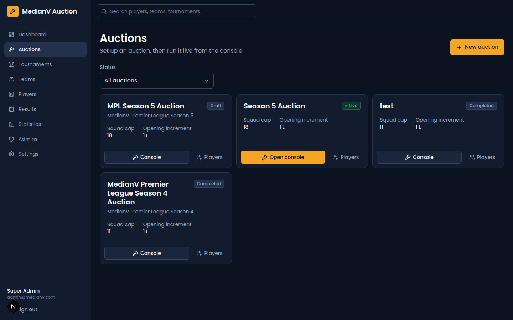
Build the player pool
Page: an auction card → Players
The pool is the list of players who will come under the hammer, in order. Only active players who are not already in the pool are offered.
- On the auction card, click Players.
- Click Add players.
- Search or filter by role, then tick every player to include. The button counts your selection.
- Click Add N players.
- The Auction order list is the order players come up. Use the trash icon to remove a player before they are sold.
- When the pool is ready, click Open console.
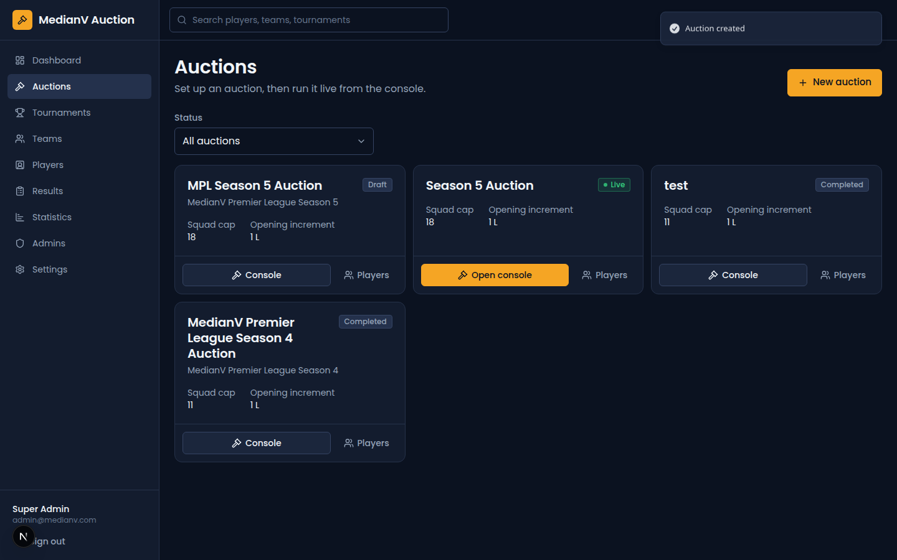
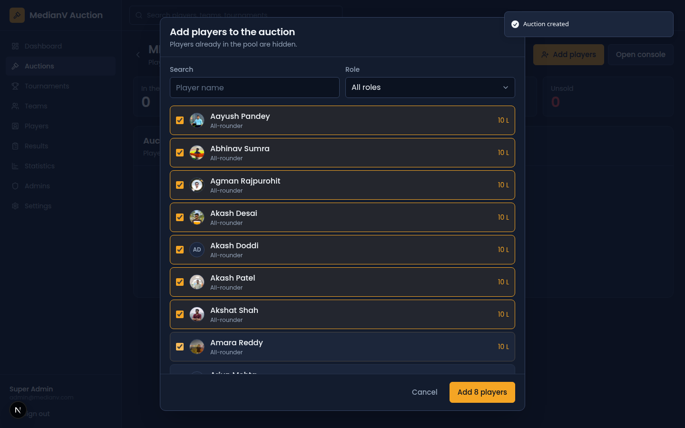
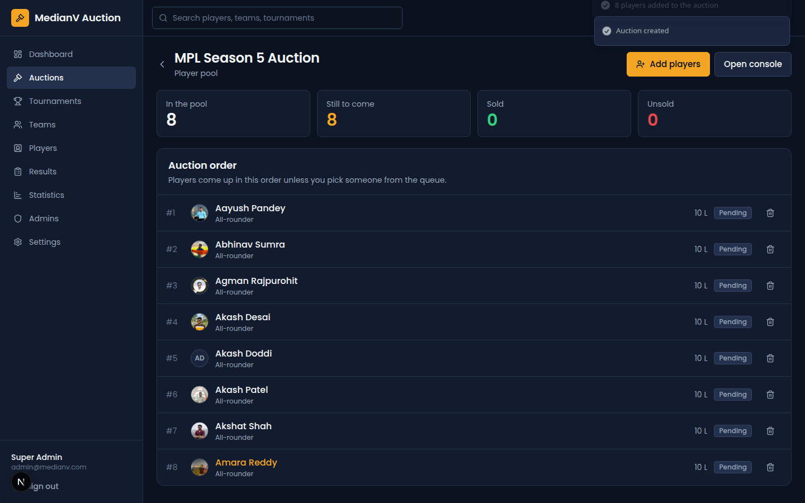
Run the auction live
Page: an auction card → Console
The console has three columns: the player under the hammer (left), the bid figure with Sell / Unsold (centre), and the teams that can bid (right). Every action is a single click.
- Click Start auction (top right). The badge turns Live.
- Click Next player. The first player in the order comes up with their Opening bid = base price.
- To record a bid, tap the team's card in the Teams panel. Its purse and the current bid update; the team is marked Leading.
- Keep tapping teams as they outbid each other. The Next bid figure shows what the next tap will cost.
- When bidding stops, click Sell — the player goes to the leading team at the current bid, and the team's purse and squad count update.
- If nobody bids, click Unsold.
- Click Bring up next player (or Skip to next player) to continue. Use Queue to pick a specific player out of order.
- Use Pause / Resume for breaks — bids are blocked while paused.
- When done, click End and confirm. Players still in the queue stay unsold.
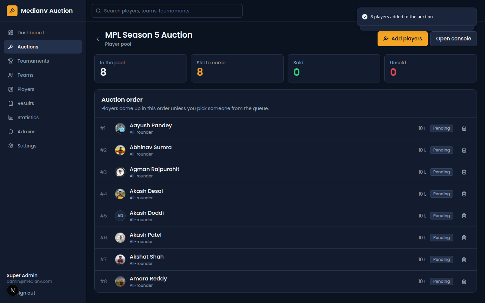
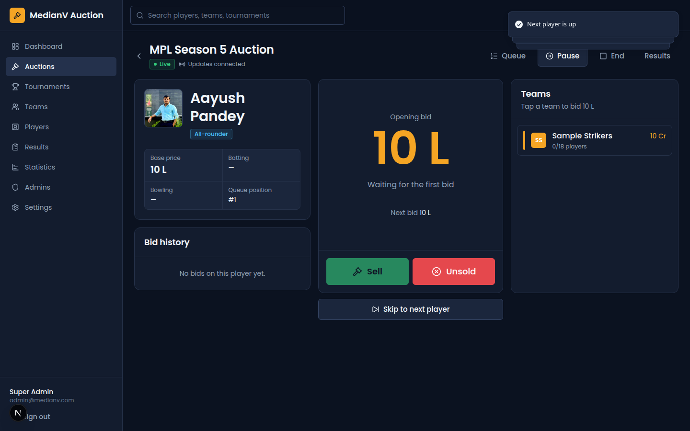
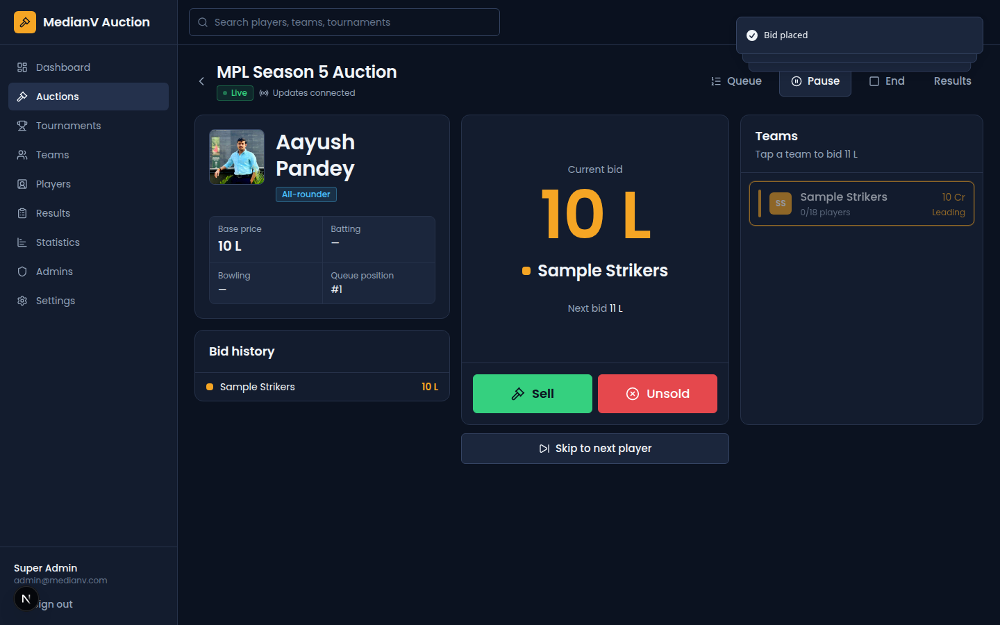
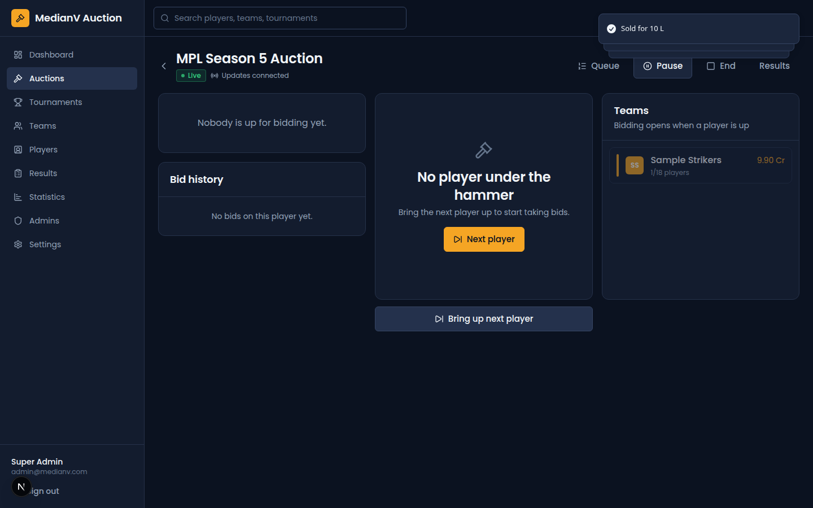
Check the results
Page: Results in the left nav, or the Results button on the console
- Click Results.
- Choose the auction in the Auction dropdown; filter by team or role if needed.
- Switch between the Sold, Unsold and Team-wise tabs.
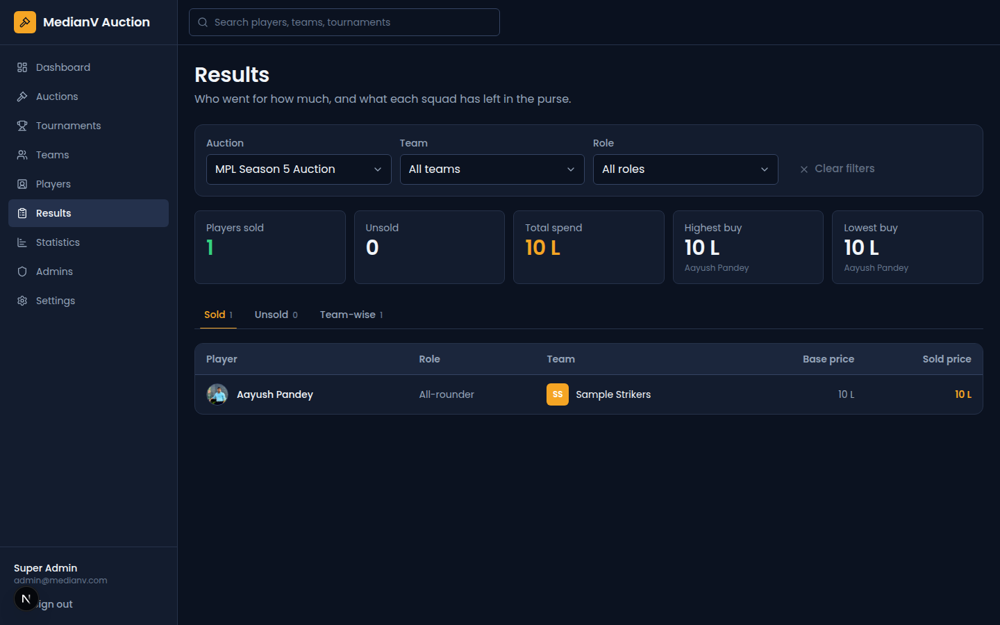
Bidding rules the server enforces
You cannot break these from the console — the button simply greys out and shows why.
Opening bid = base price
The first tap on a team records the player's base price. Every later tap adds the increment for the current level.
Tiered increments
Bids rise by the first increment until they pass the threshold, then by the larger step.
Not enough purse
A team whose remaining purse is below the next bid is greyed out.
Squad full
A team that has reached its max players (or the auction's squad cap, whichever is lower) cannot bid.
Leading
The team already holding the high bid cannot bid against itself.
Sell needs a bid
Sell stays disabled until at least one bid is on the player. Use Unsold otherwise.
Paused = no bids
While paused, team cards are disabled. Resume to continue.
Ending is final
Once ended, no further bids. Anyone still in the queue is left unsold.
If something looks wrong
Teams panel is empty in the console
The teams are attached to a different tournament than the auction. Open each team → Edit → set the Tournament to match the auction's.
A team card is greyed out
Read the small label on the card: Not active, Squad full, Not enough purse or Leading.
Sell is disabled
No bid has been placed yet. Tap a team first, or mark the player Unsold.
A player is missing from "Add players"
Either the player is not Active (Players → Edit → tick Active) or they are already in this auction's pool.
"Reconnecting" next to the auction name
The live update connection dropped. The console keeps polling every 5 seconds, so it still works — it just refreshes a little slower until it reconnects.
Wrong player came up
Click Queue and pick the right one, or Skip to next player. A skipped player with no bids is left pending, not unsold.